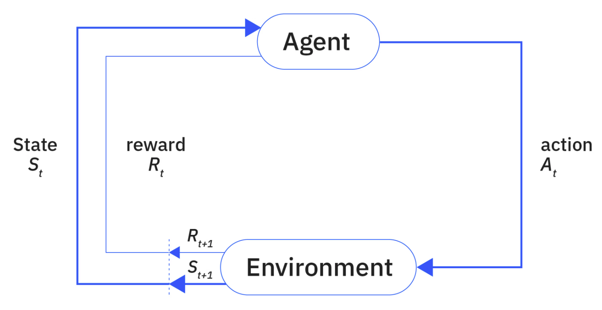
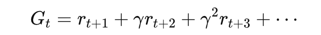
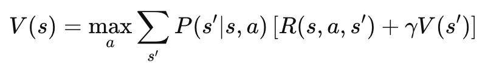
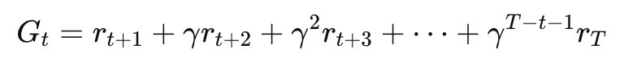
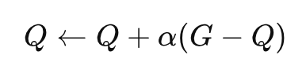
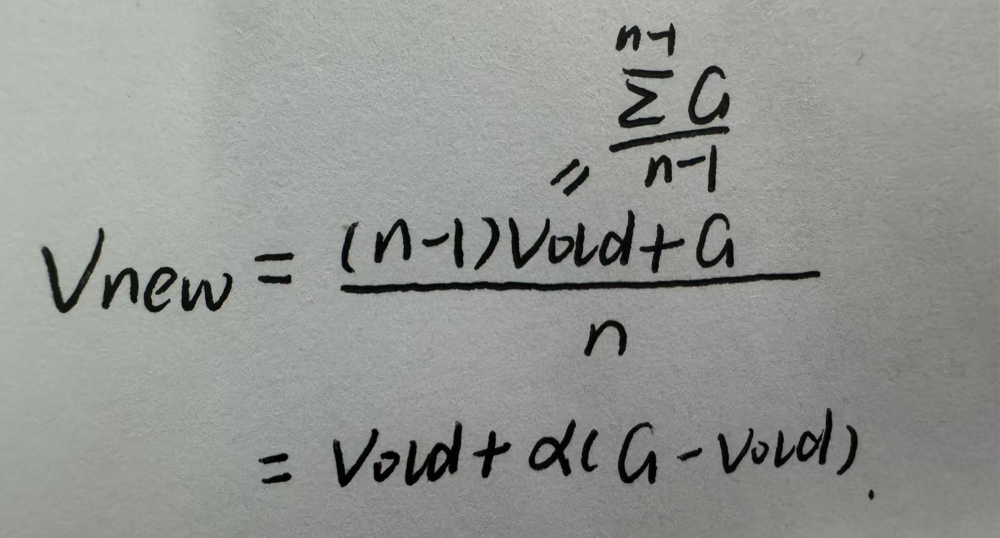
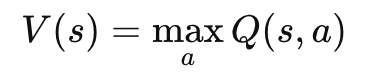
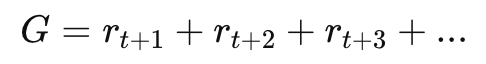
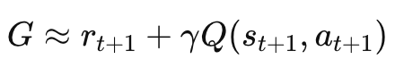
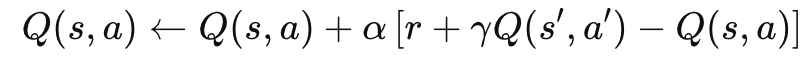

Reinforcement Learning
Reinforcement Learning（强化学习）
一、定义
强化学习（Reinforcement Learning, RL）是Machine Learning中的一个重要分支，研究的是智能体（agent）如何通过与环境（environment）交互，在试错中学习最优决策策略。
智能体在环境中采取行动，根据环境反馈的奖励（reward），不断调整策略（policy），以最大化长期累积回报（cumulative reward）。
关键元素：
智能体（Agent）：做决策的主体
环境（Environment）：智能体所处的外部系统
状态（State, s）：当前环境的描述
动作（Action, a）：智能体可执行的操作
奖励（Reward, r）：环境对动作的反馈信号
策略（Policy, π）：从状态到动作的映射规则
价值函数（Value Function）：评估状态或动作的长期收益
监督学习会使用手动标记的数据来生成预测或分类。无监督学习旨在从未标记的数据中发现和学习隐藏的模式。强化学习不同于两者。
二、学习过程
强化学习主要由代理、环境和目标之间的关系组成。许多文献都用马尔可夫决策过程 (MDP) 来表述这种关系。
Marcov决策过程
强化学习智能体通过与其环境进行交互来了解某一问题。环境可提供有关其当前状态的信息。然后，强化学习智能体会使用该信息来确定要执行的动作。如果此动作从周围环境获得了奖励信号，则会鼓励强化学习智能体在未来处于类似状态时再次执行该动作。此后每出现一个新状态，均会重复此流程。随着时间的推移，强化学习智能体会从奖励和惩罚中学习，以便在环境中采取能达成指定目标的行动。
在马尔可夫决策过程中，状态空间指的是环境状态提供的所有信息。操作空间表示强化学习代理在状态中可以执行的所有可能操作。

强化学习算法要求强化学习智能体既要利用先前所奖励的“状态-动作”的知识，又要探索其他“状态-动作”。
三、在线学习和离线学习
代理为学习策略而收集数据的方法一般有两种：
在线学习。在此方面，强化学习代理会直接通过与周围环境的交互来收集数据。当强化学习代理继续与环境互动时，便会反复处理并收集这些数据。
离线学习。当智能体无法直接进入环境时，它可以通过记录的环境数据进行学习。这就是离线学习。鉴于通过与环境直接交互来训练模型存在实际困难，大量研究转向离线学习。
四、三种基础强化学习方法
1.共同背景
强化学习里，智能体不断做这件事：
看到当前状态 s；选一个动作 a；环境给一个奖励 r；进入下一个状态 s’
以学会在每个状态下选更好的动作，使长期总奖励最大
状态价值函数V(s)：从状态s出发，未来大概能拿到多少总奖励
折扣因子γ（0-1）：未来奖励没有现在奖励“值钱“（强化学习里“马上得到的奖励”通常比“很久以后得到的奖励”更重要），因此，总回报为

2.动态规划DP
DP：知道环境“规则”——在状态s选动作a，会以多大概率到达哪个s’，在这个过程中能拿到多少奖励（环境模型）。于是想直接算出：每个状态的价值，根据价值选最好的动作
贝尔曼方程：

V(s)：当前状态s的价值
maxa：在所有动作里，挑一个最好的动作（最大收益动作）
P(s′∣s,a)：在状态s做动作a之后，转移到s’的概率
R(s,a,s′)：从s做动作a到 s’过程中拿到的即时奖励
γV(s′)：到了下一个状态s’以后，未来还能拿到的奖励的折扣值
因为做动作a后，可能去不同的下一个状态，所以把所有可能情况按概率加权平均
这就是：如果我现在选动作a，未来大概能赚多少
当前状态的价值 = 选一个最优动作后，立即奖励 + 未来价值 的期望和
优缺点：
理论精确；模型对则结果可靠；强化学习理论基础｜现实中通常不知道环境模型；状态空间大则计算量爆炸
3.蒙特卡罗 MC
MC：不需要环境模型——不知道概率，不知道转移规则。反复采样，然后从经验里估计价值
**如何估计期望总回报：**反复采样，对每个状态动作对(s,a)记录它之后的真实回报G
回报：

一局进行完了才得到G
有很多局：Q(s,a)=平均(G)，逐步求平均



优缺点：
不需要环境模型；用真实回报，偏差小｜必须等一整局结束才能学；如果一局很长，更新很慢；回报波动大，方差大
4.时序差分TD：
DP 的问题：要知道模型
MC 的问题：要等结束
TD 想要的是：不需要模型，而且每走一步就能学
MC用的是：

完整未来
TD：

只看当前奖励和下一步的估计价值
